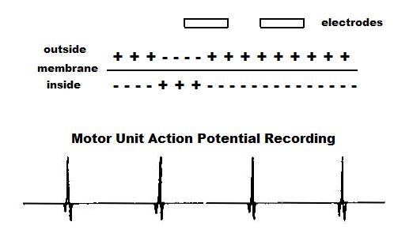
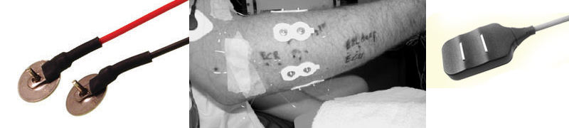
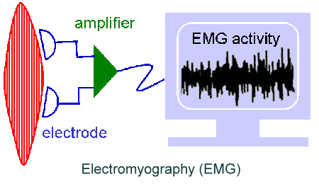
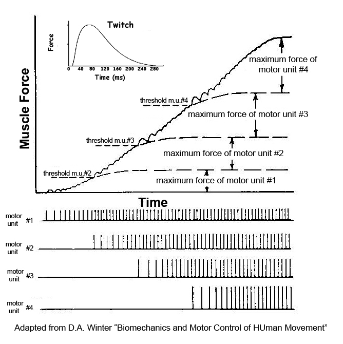

Electromyography
Electromyography is the measurement of electrical activity of muscle. Often called EMG for short. The central nervous system activates muscle by sending an electrical signal along the nerve to the muscle. The muscle cell has an excitable membrane that depolarizes and repolarizes.

The resting potential of the muscle cell has the inside negative relative to the outside. When the cell depolarizes, the inside becomes positive relative to the outside for a short period of time and then repolarizes. The wave propagates along the fiber and the change in potential can be measured by electrodes. As the wave propagates along the fiber, it passes the electrodes such that each electrode "sees" the potential slightly differently. The amplifier takes the difference between the two electrodes which eliminates ambient noise common to both electrodes and only records the difference which is due to the propagating wave along the muscle fiber.
The result is called the motor unit action potential (MUAP). Each fiber within the motor unit fires simultaneously and is an all-or-none event that only last about 1ms in time. When a motor unit becomes active, it fires at a rate of 8 to 60 per second producing a train of pulses called the motor unit action potential train (MUAPT). Four MUAPs are shown in a MUAPT on the right.
Since the muscle is composed of many motor units, the electrodes record action potentials from many different motor units. The amplitude of each MUAP is dependent on the number of fibers within the motor unit and the proximity of those fibers to the recording electrodes. Motor units with many fibers (larger motor units) or motor units with fibers close to the electrodes have larger action potentials than others.
Electrodes:
The figure below show three examples of surface electrodes. Highly conductive metal electrodes on the left, disposable electrodes in the middle and a self contained pair on the right.
It is also possible to use indwelling electrodes from a needle or fine wire to measure the activity of deep muscles.


Motor units fire independently of each other such that they have different firing rates and they fire asynchronously. When two MUAPs arrive at the electrodes at the same time the recording is a superposition principle which is a summation. Since action potentials have positive and negative phases, the superposition can be a subtraction when the negative phase of one MUAP arrives at the same time as the positive of another MUAP. With many motor units firing at high firing rates, the resulting EMG signal is a rather noisy pattern of high frequencies that looks like the figure on the right.
Before looking at EMG with many motor units firing at high firing rates, let's review how muscle using recruitment of motor units and firing rates to increase muscular force. The fundamental mechanical response to an action potential is a twitch of force. Since the muscle twitch lasts much longer than the action potential, force increases when a subsequent action potential occur before force has relaxed. This twitch summation results with increasing the firing rate of the motor unit. Muscle also develops more force by recruiting motor units in addition to increasing the firing rates of those units.

The diagram to the right shows four motor units being successively recruited and increasing in firing rate to grade force. Each time a motor unit fires, to produces a twitch of force and an action potential. The twitch is the fundamental mechanical event of muscle contraction, and the action potential is the fundamental electrical event. As the twitches overlap, force increases. Similarly, as motor unit action potentials overlap, the EMG activity increases. Therefore, recording EMG activity is an excellent tool to measure muscular involvement.